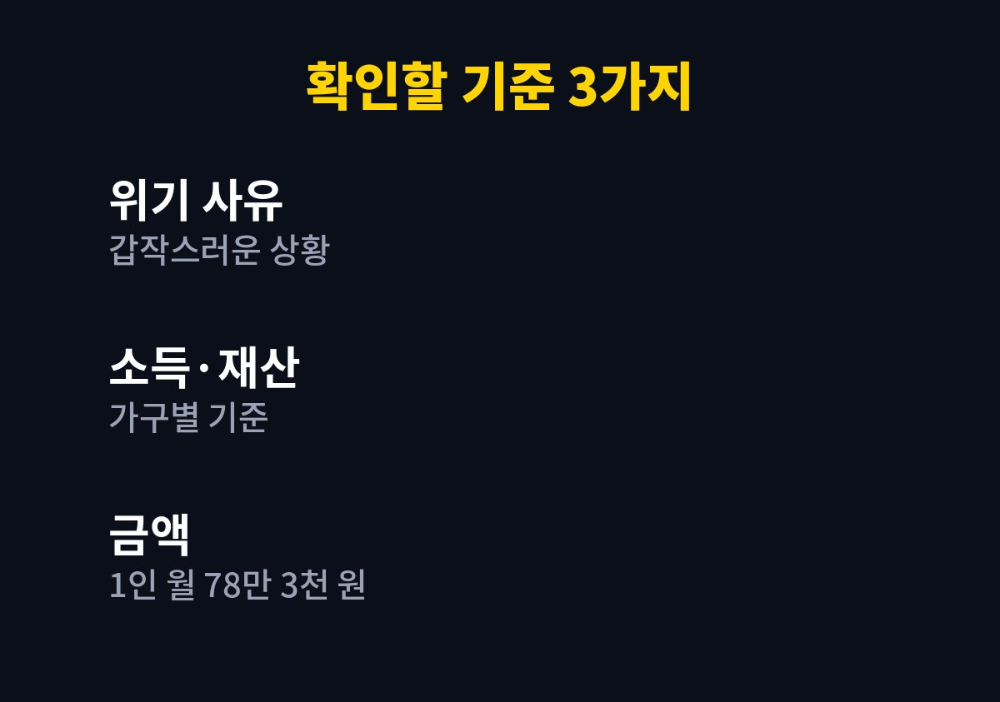
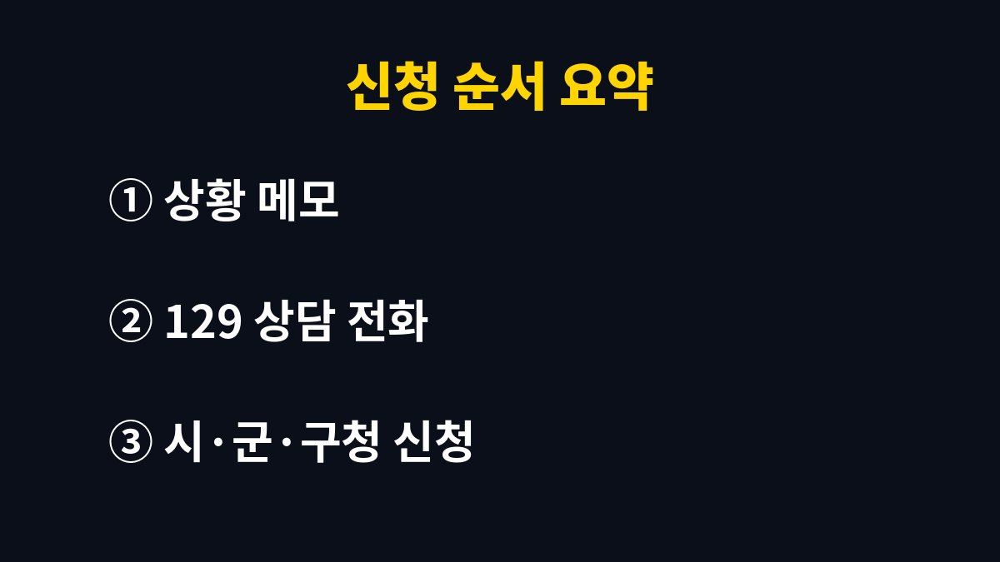

위기가구 생계지원 신청은 갑작스러운 위기가 닥친 날 129 보건복지상담센터나 관할 시·군·구청에 먼저 문의하는 것에서 시작하며, 2026년 기준 생계지원은 1인 가구 월 78만 3천 원으로 안내되고 있다.
2026년 11월 기준으로 복지로에 공개된 생계지원 안내를 바탕으로 신청 순서와 헷갈리는 부분을 정리했다.
정기 복지제도와 달리 갑자기 생계가 막막해진 가구를 먼저 돕는 구조라서, 평소 복지 혜택과 인연이 없던 사람도 대상이 될 수 있다.
이 제도는 월급이 줄었다는 이유만으로 열리는 제도가 아니다.
가구에 갑작스러운 위기 사유가 생겼는지, 그리고 소득과 재산이 정해진 기준 안에 있는지를 함께 본다.
위기 사유의 종류와 소득·재산 기준은 가구원 수와 지역에 따라 다르므로 숫자를 외우기보다 접수 창구에서 직접 확인해야 한다.
이 글에서 확인된 금액은 1인 가구 생계지원 월 78만 3천 원뿐이고, 나머지 기준은 공식 공고에서 확인해야 한다.
| 확인 항목 | 내용 | 확인할 곳 |
|---|---|---|
| 위기 사유 | 갑작스러운 소득 상실, 질병, 재난 등 위기 상황이 있는지 | 복지로 생계지원 안내 |
| 소득·재산 | 가구 규모에 따른 기준을 충족하는지 | 관할 시·군·구청 |
| 생계지원 금액 | 1인 가구 월 78만 3천 원 (2026년 안내) | 복지로 |
| 상담 창구 | 129 보건복지상담센터 | 전화 상담 |
이 금액은 1인 가구 기준이라 가구원 수가 늘면 달라진다.
안내된 금액이 곧 통장에 들어올 금액이라는 뜻은 아니고, 실제 지원 여부와 액수는 심사로 정해진다.
지원이 몇 개월 이어지는지는 공식 공고에서 확인해야 한다.
한 번 받았다고 다음 달에도 자동으로 나온다고 생각하면 곤란하다.


해고 통보서나 진단서 같은 서류는 위기 직후에 바로 구하기 어렵다.
그렇다고 전화를 미룰 이유는 없다.
어떤 서류가 먼저 필요하고 무엇은 나중에 내도 되는지는 129나 접수 창구에서 알려 준다.
접수 후에는 담당 공무원이 확인 전화를 거는 일이 많다.
받지 못한 전화가 쌓이면 결과 확인이 늦어질 수 있어서 연락받을 번호를 한 개로 정해 둔다.
혼자 사는 가구라면 주민센터 복지 담당자에게 방문 상담이 되는지도 함께 묻는다.
위기 사유가 질병이라면 진단서나 입원 확인서처럼 날짜가 적힌 서류를 미리 사진으로 남겨 두면 편하다.
기초생활보장이나 다른 급여를 받고 있어도 새로운 위기가 생기면 상담은 받을 수 있다.
다만 같은 목적의 지원이 겹치는지는 담당자가 판단하는 부분이라 내가 단정해서 쓸 수 없다.
겹침 여부는 신청 단계에서 공식 안내로 확인해야 한다.
위기가 생긴 날짜, 가구원 수, 현재 사는 곳의 형태, 최근 몇 달 동안의 소득 변화, 통장 잔액을 메모해 둔다.
상담에서 가장 먼저 나올 법한 질문이라서 답을 준비해 두면 통화가 짧아진다.
복지로 서비스 상세 화면의 신청 방법과 문의처 안내도 전화 전에 한 번 읽어 둔다.
예를 들어 가게 문을 닫은 뒤 석 달째 소득이 없는 1인 가구라면, 통장 잔액과 폐업 사실을 확인하는 서류부터 챙겨 상담 전화를 걸면 된다.
이 제도는 기준이 가구마다 달라서 글로 대상 여부를 미리 판단하기 어렵다.
지금 상황이 급하다면 이 글을 닫고 129에 전화하는 쪽이 빠르다.
다음에 확인할 것은 관할 시·군·구청의 접수 시간과 필요한 서류 목록이다.
참고 자료: 복지로 「생계지원」 서비스 상세(2026년 11월 확인)
※ 2026년 11월 기준 공개된 정보를 정리한 글이며, 정확한 대상 요건·금액·신청 기간은 복지로·정부24·관할 주민센터의 공식 공고를 확인하길 바란다.